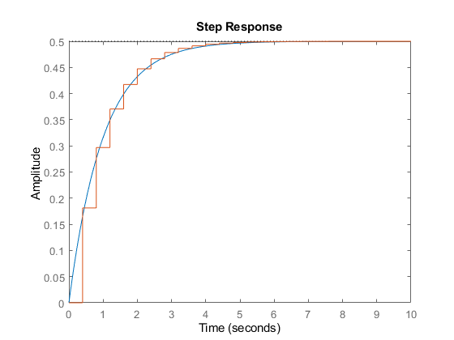
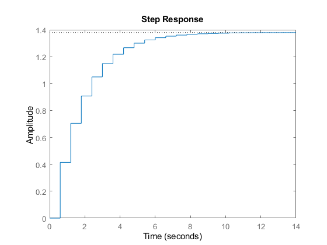
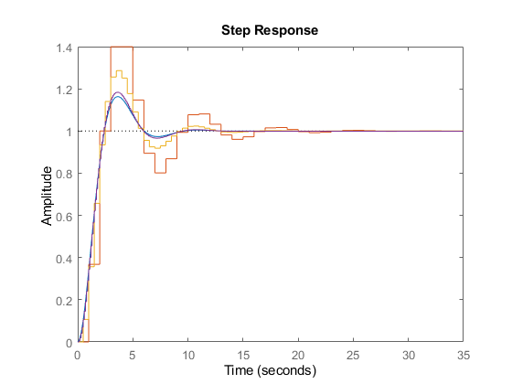

Contents
clear; close all; clc;
Problem 1
figure(1);
Ts = 0.4;
Gs = tf(0.5, [1 0.5])
Gscl = feedback(Gs,1)
Gz = c2d(Gs, Ts)
Gzcl = feedback(Gz, 1)
hold on;
step(Gscl);
step(Gzcl);
hold off;
Gs =
0.5
-------
s + 0.5
Continuous-time transfer function.
Gscl =
0.5
-----
s + 1
Continuous-time transfer function.
Gz =
0.1813
----------
z - 0.8187
Sample time: 0.4 seconds
Discrete-time transfer function.
Gzcl =
0.1813
----------
z - 0.6375
Sample time: 0.4 seconds
Discrete-time transfer function.

problem 2
figure(2);
Ts = 0.6;
Gs = tf(2,[1 0.5])
Gz = c2d(Gs, Ts)
Gzcl = feedback(Gz, 0.04)
hold on;
step(0.4*Gzcl)
hold off;
Gs =
2
-------
s + 0.5
Continuous-time transfer function.
Gz =
1.037
----------
z - 0.7408
Sample time: 0.6 seconds
Discrete-time transfer function.
Gzcl =
1.037
----------
z - 0.6993
Sample time: 0.6 seconds
Discrete-time transfer function.

problem 3
figure(3);
hold on;
Gs = tf(1, [1 1 0])
Gscl = feedback(Gs, 1)
step(Gscl);
Ts = 1;
Gz = c2d(Gs, Ts);
Gzcl = feedback(Gz, 1)
log(pole(Gzcl))/Ts
step(Gzcl);
Ts = 0.5;
Gz = c2d(Gs, Ts);
Gzcl = feedback(Gz, 1)
log(pole(Gzcl))/Ts
step(Gzcl);
Ts = 0.1;
Gz = c2d(Gs, Ts);
Gzcl = feedback(Gz, 1)
log(pole(Gzcl))/Ts
step(Gzcl);
hold off;
Gs =
1
-------
s^2 + s
Continuous-time transfer function.
Gscl =
1
-----------
s^2 + s + 1
Continuous-time transfer function.
Gzcl =
0.3679 z + 0.2642
-----------------
z^2 - z + 0.6321
Sample time: 1 seconds
Discrete-time transfer function.
ans =
-0.2293 + 0.8907i
-0.2293 - 0.8907i
Gzcl =
0.1065 z + 0.0902
--------------------
z^2 - 1.5 z + 0.6967
Sample time: 0.5 seconds
Discrete-time transfer function.
ans =
-0.3614 + 0.9088i
-0.3614 - 0.9088i
Gzcl =
0.004837 z + 0.004679
---------------------
z^2 - 1.9 z + 0.9095
Sample time: 0.1 seconds
Discrete-time transfer function.
ans =
-0.4742 + 0.8794i
-0.4742 - 0.8794i

problem 4
hold on;
Gs = tf(1, [1 1]);
Ts = 1;
Gz = c2d(Gs, Ts)
hold off;
Gz =
0.6321
----------
z - 0.3679
Sample time: 1 seconds
Discrete-time transfer function.
Problem 5
syms z
C = (z-0.9)*(z-0.8)*(z^2-1.9*z+1);
expand(C)
roots([1 -3.6 4.95 -3.068 0.72])
ans =
z^4 - (18*z^3)/5 + (99*z^2)/20 - (767*z)/250 + 18/25
ans =
0.9500 + 0.3122i
0.9500 - 0.3122i
0.9000 + 0.0000i
0.8000 + 0.0000i